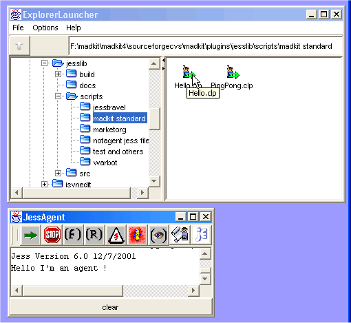

Jess is a rule based language written by Ernest Friedman-Hill and is available at the Sandia Corp site. Jess is an expert system shell and scripting language written in Java which is based on the Clips rule system (which was itself a rewriting in C of the OPS5 rule based system). Jess is very powerful and has most of the features one can expect from a rule based system. Moreover, its implementation in Java makes it suitable to be fairly portable among platforms. See the Jess web page for more informations about the Jess system, its functionalities and its use.
Its incorporation into Madkit makes the development of rule based agents easy. A JessAgent is simply a Madkit agent which uses the power of rule inferencing of Jess. A single JessAgent behaves exactly like the Jess engine. But its interest in Madkit does not come from its usage as an isolated system, but as an agent which can interact with other agents. JessAgents can enter and leave groups, play and leave roles, send and receive messages to and from agents of any kind (not necesserily JessAgents), create and launch any Madkit agents, etc. Thus JessAgents have the full power of Java based Madkit agents.
Thus, using Jess in MadKit, you can create agents that have some reasoning capacities using knowledge you supply in the form of declarative rules.
You may find some documentation about Jess at the Jess site documentation pages (there is no general documentation about Jess in the MadKit package). In the following you will find information about how to use Jess within MadKit and how to build agents using the Jess language.
JessAgents come in two formats:
The Jess language may be used to script specific MadKit agents called JessAgent. When a JessAgent is instanciated, it comes with a file called its scripts which defines its behavior using the Jess rule programming language.
The behavior of a JessAgent is given as a set of rules. A rule is fired when its precondition part (the part before the '=>' symbol) is verified, and then its action part (the part after the '=>' symbol) is activated. A rule with no precondition is always verified and thus is activated first.
The following listing gives the the definition of the written in Jess (the file is given here). The startup rule, with no precondition, is used to initiate the behavior of the Helllo agent, by asserting a social goal, i.e. trying to play the role "myRole" in the group "myGroup" of the community "myCommunity". The 'enteringGroup' rule implements the previous social goal. Note that the goal is retracted at the end of the rule, once it has been achieved. The last rule 'receivingStringMessage' is simply used to display all received messages of type StringMessage.
defrule startup ""
=>
(println "Hello I'm an agent !" crlf)
(assert (social-goal "myCommunity" "myGroup" "myRole"))
)
(defrule enteringGroup ""
?goal <- (social-goal ?com ?group ?role)
=>
(bind ?r (createGroup TRUE ?com ?group ))
(if (= ?r 1)
then
(requestRole ?com ?group ?role)
(retract ?goal)
)
)
;; add rules for handling messages here:
(defrule receivingStringMessage ""
?mess <- (StringMessage (sender ?sender)(string ?str))
=>
(printout t "Received message: " ?str " from " ?sender crlf)
(retract ?mess)
)
(reset)
(run)
|
To launch this agent, start the Explorer and double click on the file Hello.clp situated in the directory plugins/jesslib/scripts/madkit standard:

(requestRole "myCommunity" "myGroup" "ed")
(broadcastMessage "myCommunity" "myGroup" "myRole"
(new "madkit.kernel.StringMessage" "Hello world!"))
JessAgent is a language agent. As such the user can develop Madkit applications without writing any Java code. Here are the main functions which are available to JessAgent.
Returns a reference to the current agent.
Pause the agent for the amount of time in milliseconds
Displays the string s in the standard output of the agent.
Returns the AgentAddres of the agent a.
Set (or returns) the name of an agent
Caution: this function takes an AbstractAgent as its argument, not an AgentAddress. This will be fixed in a future release.. getAgentsWithRole .
Create a group g in the community c if it is present, or in the community "public" otherwise.
Note: limitation of JessAgent 1.1: the created group is necessarily a "free" group, i.e. a group in which there is no limitations and no permission required to join it.
Request to play the role r into the a group g in the community c if it is present, or in the community "public" otherwise. As usual, groups, roles and communities are passed as strings.
Note: limitation of JessAgent 1.1: the created group is necessarily a "free" group, i.e. a group in which there is no limitations and no permission required to join it.
Note: limitation of JessAgent 1.1: Jess agents may only join "free" groups, i.e. a group in which there is no limitations and no permission required to join it.
Leaves the role r which exists in the group g of community c if the parameter is present, or of community "public" if not. If the current agent plays only the role r in g, then it leaves the group.
Leaves the group g of community c if the parameter is present, or of community "public" if not.
Returns a list of all agents (represented by their AgentAddress) playing the role r in the group g. The group is taken from the community c if the parameter is present or of the community "public" if not. Note: The current agent MUST be a member of the group g to get this information
Returns one agent taken at random from the list returned by getAgentsWithRole .
Returns TRUE if the community c exists, i.e. if the kernel (represented by the SiteAgent) is present in this community. Returns FALSE otherwise.
Returns TRUE if the group g exists in the community c if the parameter is present, or exists in the community "public" if not. Returns FALSE otherwise.
Returns TRUE if the role r of the group exists in the community c if the parameter is present, or exists in the community "public" if not. Returns FALSE otherwise.
Returns the list of all groups of which the current agent is a member. Groups are taken from the community c if the parameter is present or of the community "public" if not.
Returns the list of all groups existing in the community c if the parameter is present, or existing in the community "public" if not.
Returns the list of all roles played by the current agent in the group g. The group is taken from the community c if the parameter is present or of the community "public" if not.
Returns the list of all roles existing in the group g. The group is taken from the community c if the parameter is present or of the community "public" if not. Note: The current agent MUST be a member of the group g to get this information
Returns the list of all communities in which the current kernel (through its SiteAgent) is present. By default, contains at least one element, the "public" community.
Sends the message m to the agent represented by its agent address a.Exemple:
(foreach ?x (getAgentsWithRole "brain-stormers" "genius") (sendMessage ?x (new "madkit.lib.messages.StringMessage" "Hello world!"))) sends a StringMessage to all agents with the role "genius" in the group "brain-stormers". |
Sends the message m to all agents playing role r within group g in community c (or in community "public" if this parameter is not present).
When a Jess agent receives a message, it add the message to its facts base. Thus you do not have to write a live() function: the whole rule based describes the "live" behavior of a JessAgent.
To be evaluted correctly, standard types of messages (i.e. all messages except ControlMessages) should be known by the receiver. To do so, a new type of message has to be declared using the function defineMessageType which associate a symbol to the name of message class. For example, StringMessages are declared in the following way:
(defineMessageType StringMessage madkit.lib.messages.StringMessage) |
The following message types are already declared:
(defineMessageType ActMessage madkit.lib.messages.ActMessage) (defineMessageType StringMessage madkit.lib.messages.StringMessage) (defineMessageType ObjectMessage madkit.lib.messages.ObjectMessage) (defineMessageType KQMLMessage madkit.lib.messages.KQMLMessage) (defineMessageType ACLMessage madkit.lib.messages.ACLMessage) |
If the Jess engine of a JessAgent does not work, then the message is added to the facts of the receiver and the Jess engine is reactivated. If the Jess engine runs, it is necessary to repeatedly use the function readMessages to tell the agent to take its incoming messages and add them into the fact list. Here is an example of an agent's behavior that continuously loops and interpret incoming messages:
(createGroup "testloop") (requestRole "testloop" "performer") (assert (ok)) ;; rules R1 and R2 should be evaluated before ;; thus the use of salience in other rules (defrule R1 "" ?ok <- (ok) => (retract ?ok) (pause 500) (printout t ".") (readMessages) (assert (ko)) ) (defrule R2 "" ?ko <- (ko) => (retract ?ko) (pause 500) (printout t "-") (readMessages) (assert (ok)) ) (defrule MessageReading "Reads messages and do nothing" (declare (salience 100)) ?m <- (ActMessage (sender ?sender) (action ?act&:(not (member$ ?act (create$ "halt" "eval")))) (content ?cont)) => (printout t "got a message : " ?act " with content: " ?cont crlf) (retract ?m) ) (defrule MessageHalting "Halt the loop when receiving such a message" (declare (salience 100)) ?m <- (ActMessage (sender ?sender)(action "halt") (content ?cont)) => (printout t "got a halt message! " crlf) (retract ?m) (halt) ) (defrule MessageEvaluating "Evaluate the content of the incoming message" (declare (salience 100)) ?m <- (ActMessage (sender ?sender)(action "eval") (content ?cont)) => (printout t "got an eval message! " crlf) (retract ?m) (printout t "=> " (eval ?cont) crlf) ) (defrule EvalStringMessage "Evaluate the content of a StringMessage" (declare (salience 100)) ?m <- (StringMessage (sender ?sender)(string ?cont)) => (printout t "got a StringMessage! " crlf) (retract ?m) (printout t "=s=> " (eval ?cont) crlf) ) |
JessAgents may be controlled from the outside via ControlMessages. ControlMessagesare used as system messages and should not be used as application messages. A ControlMessagecontains two fields: an action field which dictates the kind of action the receiver should do, and a content field which is used for some messages. Here is the list of already available ControlMessages:
Table 4.1. Control messages
| Action | Content | Behavior |
| run | run the engine | |
| facts | stops the engine | |
| rules | print the rules | |
| reset | prints the facts | |
| reinit | clear and load again the initialization file (stored in the "loadFile" property) | |
| eval | the string which is evaluated by the receiver | eval a string |
| load | the address of a file which is loaded by the receiver | load a file |
| watch | a keyword taken from facts, rules, activations, compilations which are known by Jess engines and are used to show its activity | set the kind of trace |
| unwatch | a keyword taken from facts, rules, activations, compilations which are known by Jess engines and are used to show its activity | unset the kind of trace |
| clear | clear all functions, rules and facts |